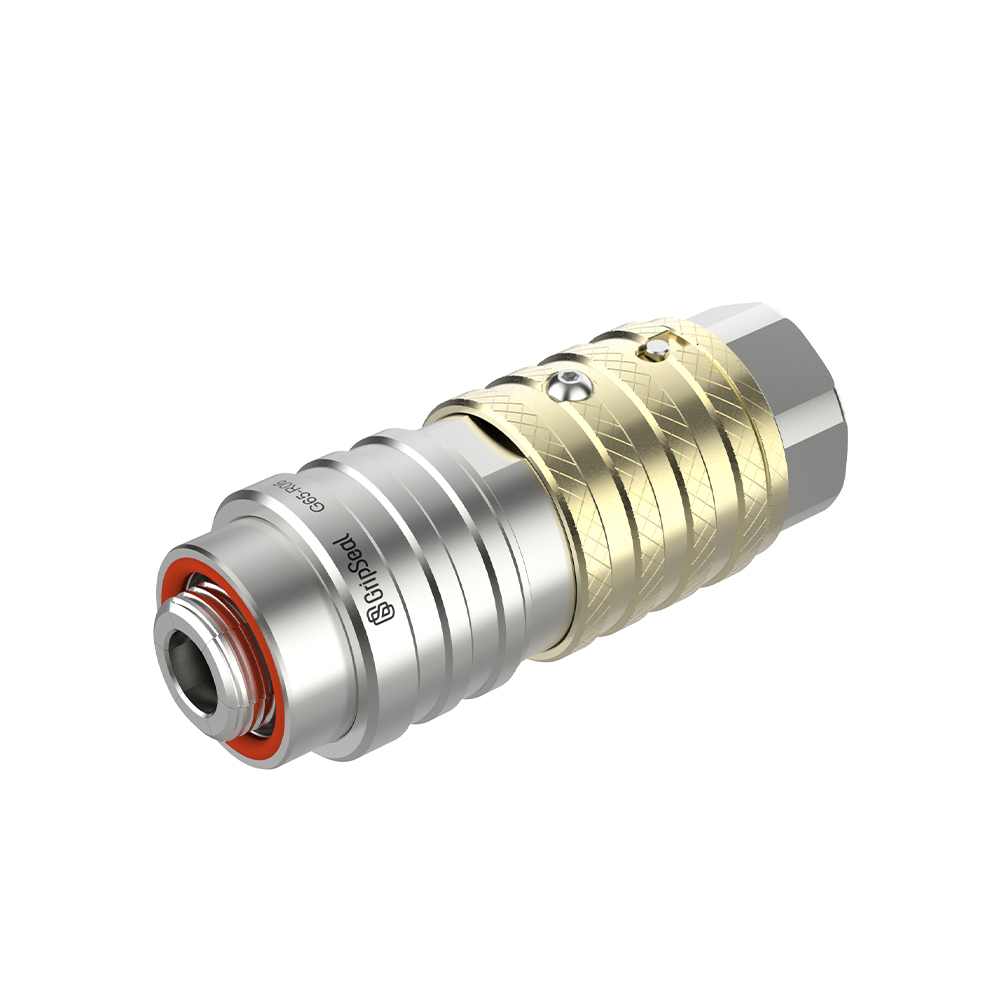

Series List
Choose by Thread Direction and Pressure Duty
This page should behave like a category shelf: customers first pick the closest series, then enter a model page for parameters and selection details.

G85 High-Pressure External Thread
For sealing and connecting external threaded ports where faster connection and reduced thread wear matter.
External ThreadHigh PressureManual / Pneumatic
View Series Details

G80 Internal Thread
For internal threaded ports, housings, manifolds, and leak-test fixtures that need repeatable quick sealing.
Internal ThreadPressure TestFixture Ready
View Series Details

G60 External Thread
For external threaded interfaces in instruments, appliance testing, HVAC-R, and routine production validation.
External ThreadTest ConnectionCompact
View Series Details

G65 Threaded Quick Seal Connector
For compact threaded interfaces and repeated production test ports.
ThreadedQuick SealProduction Test
View Series Details